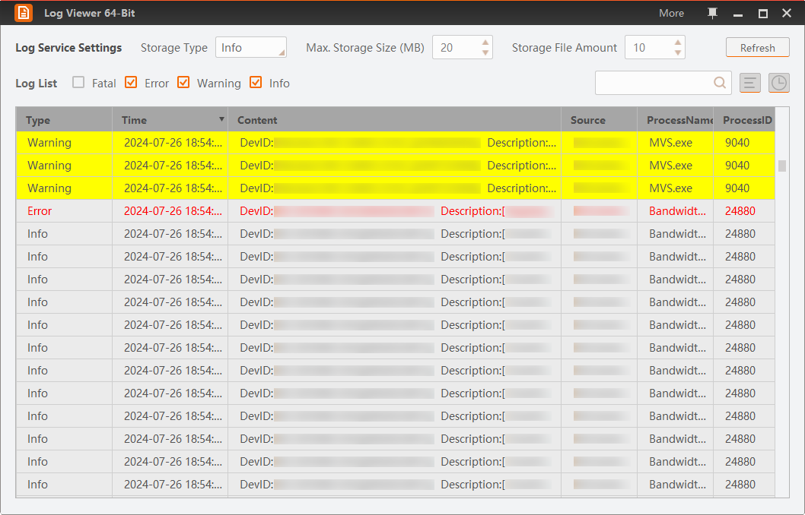
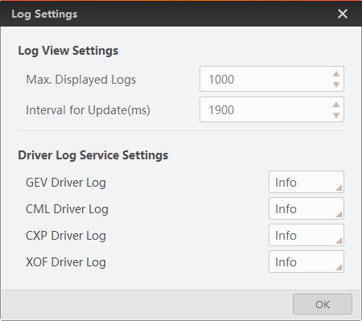

You can view the logs of SDK and frame grabbers via the log viewer tool.
Logs store events, processes, and messages from the Software and devices, with which you can monitor the status and effectively locate configuration issues. With the Log Viewer, you can view log type, time, content, and other related information.
Click in the menu bar to open the Log Viewer window.

Figure 1 Log Viewer|
Log Type |
Description |
|---|---|
|
Fatal |
One key functionality is not working. |
|
Error |
Errors occurred on the Client. |
|
Warning |
The warning information sent by the Client when precondition error occurs. |
|
Info |
The information about operations. |
You can perform the following operations.
In Log Service Settings, you can configure the following:
Click Refresh to refresh logs.
In the Log List, select displayed log types.
Enter keywords in to search logs.
You can only search the keywords from the log Content.
Click to select the to-be-displayed information (time, type, content, source, etc.).
Click to set the time range of the displayed logs.
Click the Time table header to sort the logs by time.
Right-click the list and click Export All Logs.
Press and hold Shift or Ctrl, select multiple logs, right-click the log list, and click Export Selected Logs.
Right-click the log list and then click Copy All Logs.
Press and hold Shift or Ctrl, select multiple logs, right-click the log list, and click Copy Selected Logs.
Right-click the log list ant then click Clear Logs
See Configure Logs for details.
You can also customize log storage type for each driver type.
Click to pin the log viewer window above all other windows. Click to unpin.
Configure log view settings and driver log service settings.
Click to configure displayed logs amount and automatic log refresh interval.

Figure 2 More Log SettingsThe range of maximum displayed logs is from 1 to 100,000 (default value: 1000).
Set the time interval (unit: ms) for upgrading the log list.
The range of the time interval is from 100 to 1000,000 (default value: 1000).
Select a minimal level of logs to note for each type of drivers.
The level sequence is: Fatal < Error < Warning < Info < Debug < Trace.